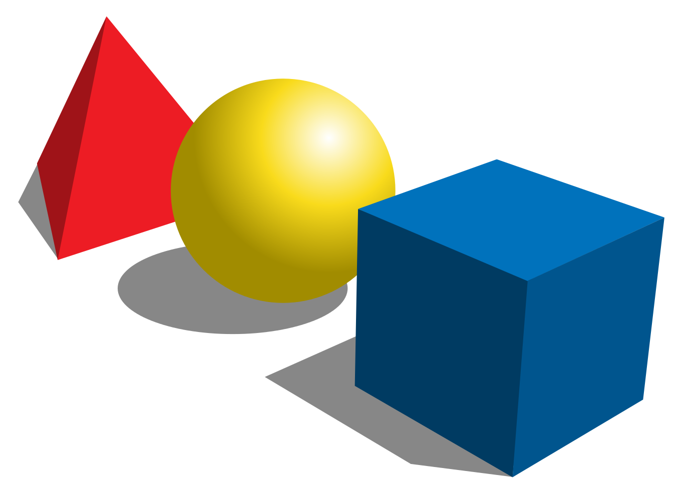
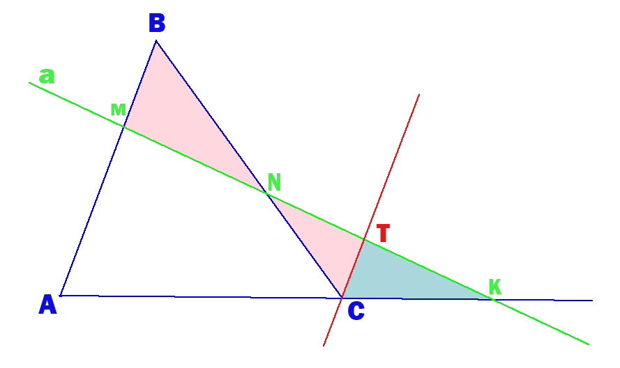

|  | Бездна Геометрии |
|
Теоремы |
Рассмотрим произвольный треугольник ABC и некую прямую l, которая пересекает две стороны нашего треугольника внутренним образом и одну — на продолжении. Обозначим точки пересечения M, N, K. Тогда выполняется следующее соотношение: (AM / MB) * (BN / NC) * (CK / KA) = 1 Д.п. CT||AB, причем a⋂CT = T. Рассмотрим △CTK и △AMK: ∠K – общий, ∠TCK = ∠MAK как соответственные при параллельных прямых CT и AB => △CTK подобен △AMK по I признаку подобия => AM / CT = AK / CK => CT = (AM * CK) / AK (1) Рассмотрим △NTC и △BMN: ∠TNC = ∠BNM как вертикальные, ∠BMN = ∠NTC как накрест лежащие при параллельных прямых AB и CT => △NTC подобен △BMN по I признаку подобия => BM / CT = BN / CN => CT = (BM * CN) / BN (2) Приравняем правые части равенств (1) и (2): (AM * CK) / AK = (BM * CN) / BN AM * CK * BN = BM * CN * AK (AM * CK * BN) / (BM * CN * AK) = 1 (AM / MB) * (BN / NC) * (CK / KA) = 1; Теорема доказана. |
|
 |
||